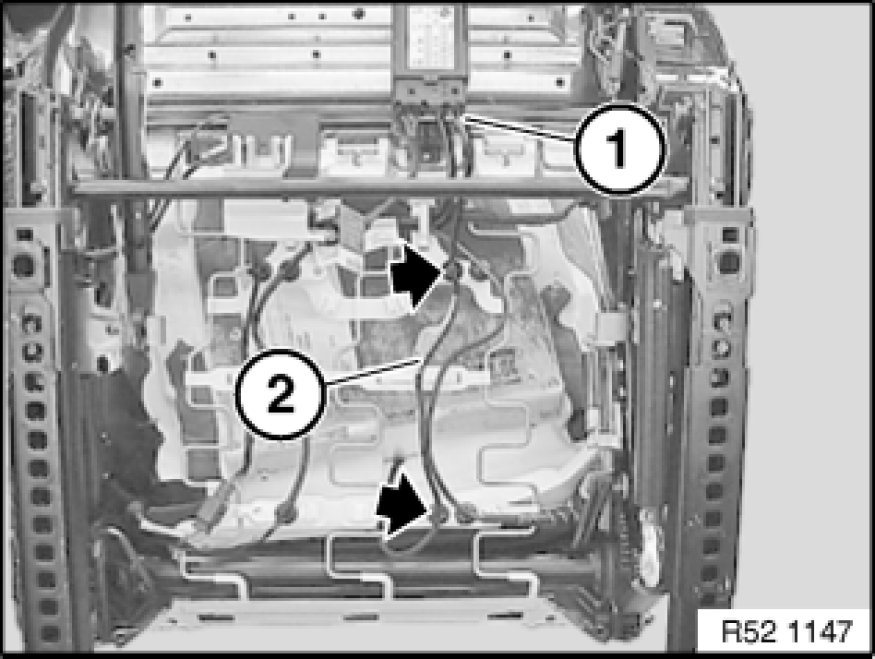
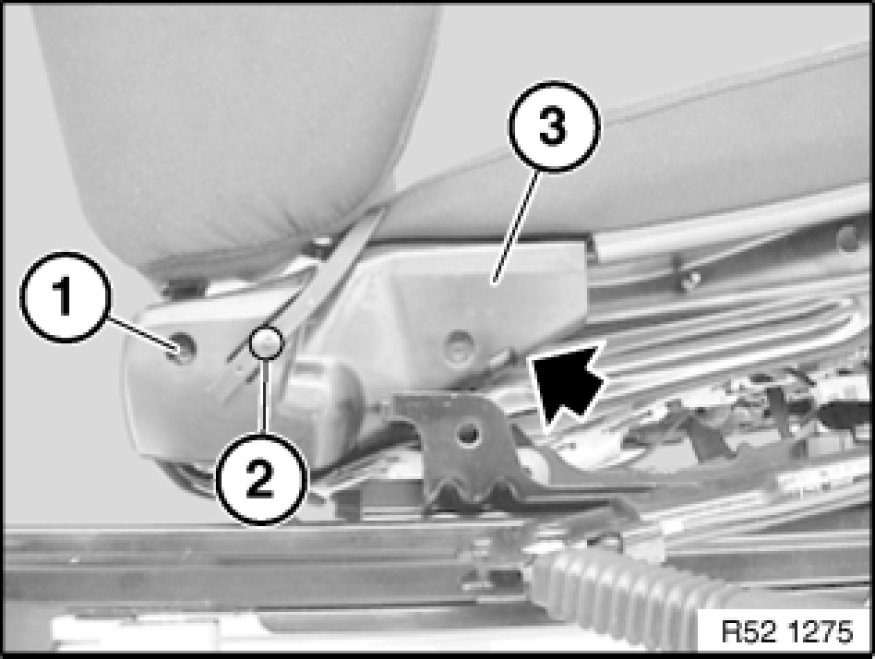
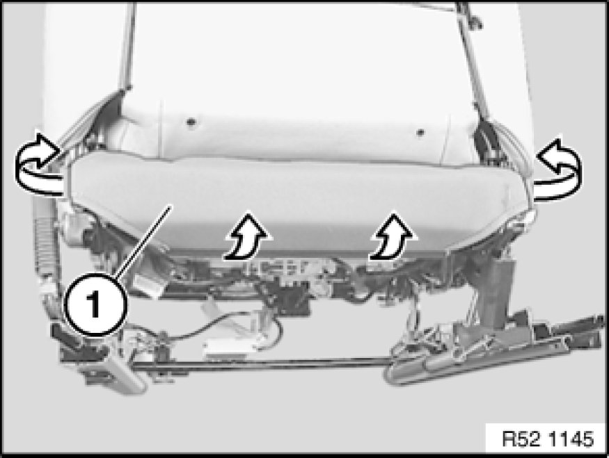
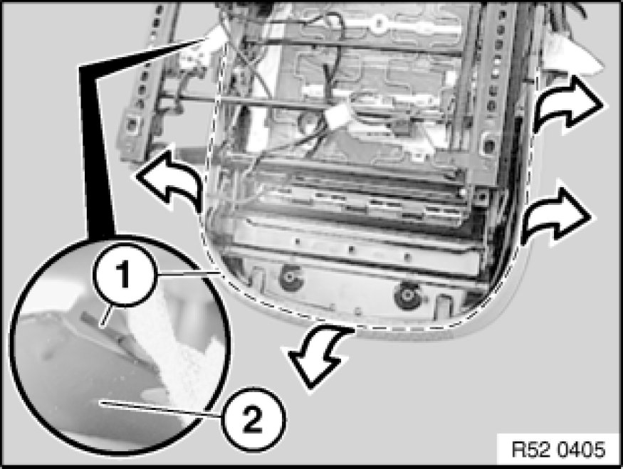
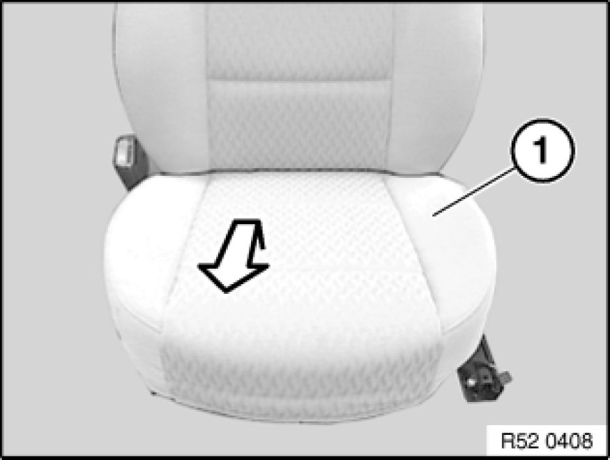
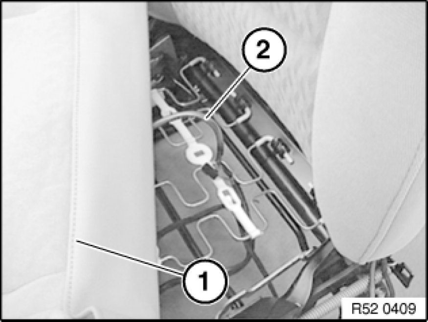
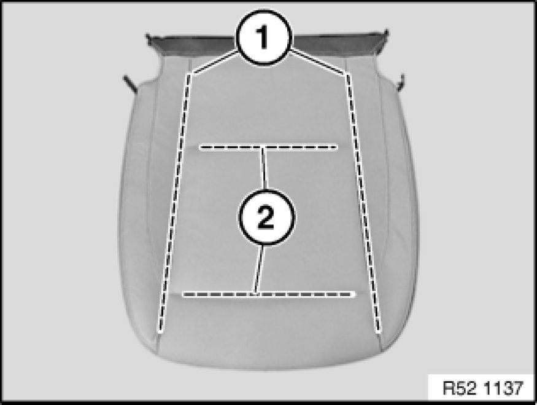
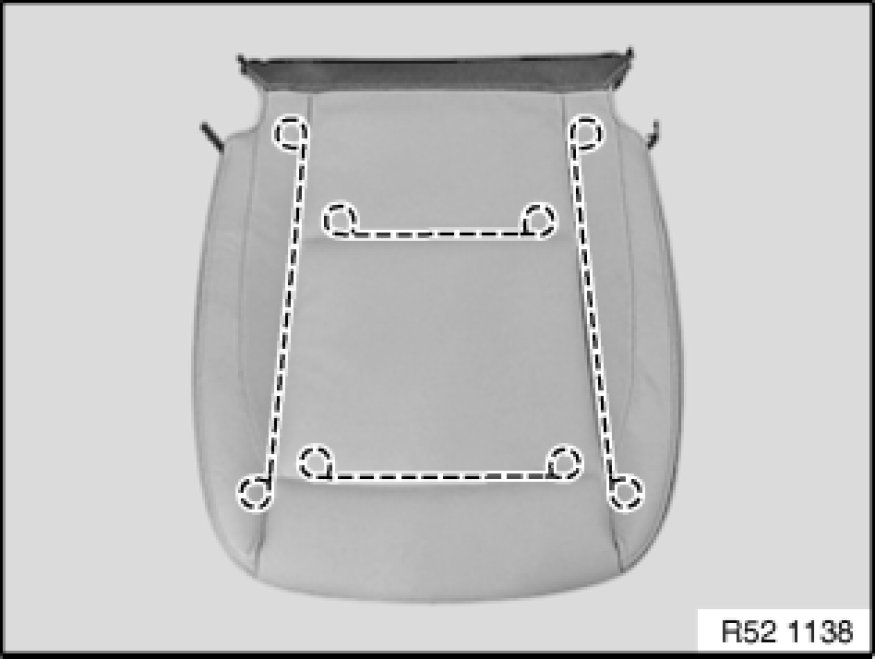
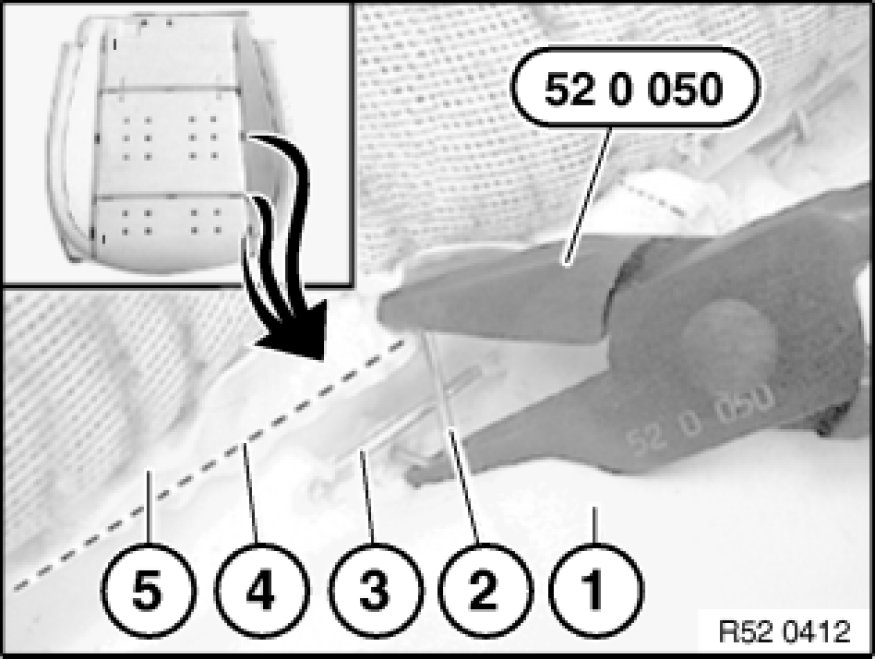

Replacing Seat Cover on Left or Right Front Seat (Normal/Manual)
52 13 400 - Replacing seat cover on left or right front seat (normal/manual)

Special tools required:
- 52 0 050 52 0 050 Pliers

Necessary preliminary tasks:
- Remove front seat Removing and Installing Left or Right Front Seat (Normal / Manual)
- Remove rear panel Removing and Installing/Replacing Rear Panel on Left or Right Front Seat Backrest on front seat backrest
- Remove outer cover on front seat

Warning!
US/CDN front passenger seat (with OC3 mat) only:
A defective OC3 mat may only be replaced complete with the padding and the seat cover.
New OC3 mat is supplied with padding, seat cover and if necessary seat heating.
After fitting, the OC3 mat must be enabled with the BMW programming system.
Individual parts not available.

Enabling seat occupancy detector (OC3 mat):
- Connect BMW programming system Programming and Relearning
- Code airbag control unit
- Clear fault memory if necessary

Version with seat heating and/or with seat occupancy detector (OC3 mat) only:
Unfasten plug connection (1) and disconnect.
Disconnect cable straps.
Release wiring harness (2) from cable holders on seat mechanism.
Important!
Feed the wiring harness carefully through the seat and backrest mechanism as the edges of the frame can be sharp.

Release screw (1).
Lever clip (2) out of seat cover on left and right.
Installation:
If necessary, replace faulty clip.
Remove trim (3) from inside of seat.

Detach seat cover (1) from seat frame.

Pull out cover welt (1) completely from seat frame (2).

Remove seat cover (1) with padding towards front/top.

Version with seat heater and/or with seat occupancy detector (OC3 mat):
Release the corresponding plug connections depending on the version and disconnect.
Pull seat cover (1) with padding forward a little and feed cable (2) out.
Remove seat cover (1) with padding towards front/top.
Note:
The operation Replacing seat cover with OC3 mat ends here.

Carefully detach all retainers in side area from longitudinal wires (1).
Pull trim wires (1) forward out of seat cover.
Carefully fold back seat cover and release retainers from cross-wires (2).
Remove seat cover from padding.
Important!
Remove all remnants of clips from seat cover and padding.

Replacement only:
If necessary, cut new seat cover to size and insert trim wires.

Installation:
Bend new clips (2) with special tool 52 0 050 52 0 050 Pliers.
1. Padding
2. Retainer
3. Trim wire in padding
4. Trim wire in cover
5. Seat cover